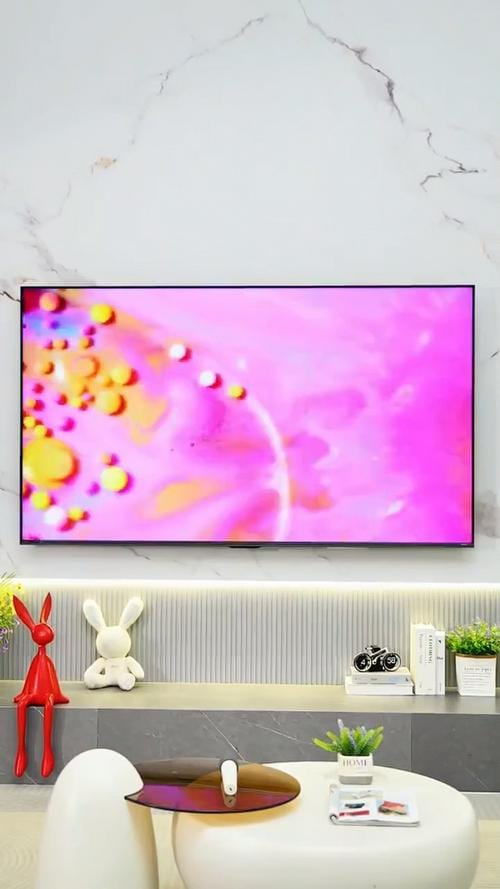

小米电视 S Pro 75（Mini LED）

小米走量级 Mini LED 电视，75 英寸千级分区与高峰值亮度把大屏体验拉到主流价位，配置厚道、系统本土化好，是预算有限追求大屏画质的热门选择，也是同价位大屏的销量常客。
客观评测
小米电视 S Pro 75 采用直下式 Mini LED 背光，分区数量约千级，厂商标称峰值亮度约 2200 尼特，支持 4K 144Hz、VRR 与 ALLM。实测 HDR 高光表现出色，暗场控制在同价位液晶中领先，运动画面流畅。接口提供 2 路 HDMI 2.1，满足次世代主机需求。作为 VA 类面板机型，可视角度与侧视色彩是主要短板，整体硬件诚意十足。
主观点评
它的吸引力在于「大且亮」：晚上看 HDR 电影，爆炸与阳光直射的画面亮得真实，75 英寸的沉浸感在小户型里堪称震撼。系统开机就能看，父母用起来毫无门槛。当然，侧着坐时画面会有点发灰，音质也只是听个响。但在这个价位要什么自行车——它把钱全花在了你最能看到的地方。
优点与不足
- Mini LED 千级分区 + 高亮度，同价位画质突出
- 75 英寸大屏做到主流价位，冲击力足
- 澎湃 OS 内容生态本土化好，长辈易用
- 可视角度一般，侧面看画面发灰
- 分区调校偶有光晕现象
- 内置音响素质平平，建议外接
参数规格
| 屏幕 | 75 英寸 Mini LED 背光液晶面板 |
|---|---|
| 面板 | VA 类面板，直下式 Mini LED 分区背光（约千级分区） |
| 分辨率 | 3840×2160（4K） |
| 刷新率 | 144Hz，支持 VRR、ALLM |
| 亮度 | 峰值亮度约 2200 尼特（厂商标称） |
| 芯片 | 四核处理器，独立画质芯片（依批次） |
| 系统 | 小米澎湃 OS（PatchWall 内容） |
| 接口 | HDMI 2.1 ×2、HDMI 2.0 ×2、USB ×2 |
| 音频 | 多单元扬声器，支持 Dolby Vision·Atmos |
| HDR | Dolby Vision、HDR10+、HLG |